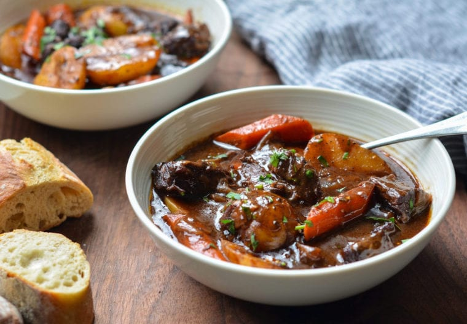

Beef Stew

Description
This classic French beef stew, otherwise known as Beef Bourguignon, is the ultimate comfort food. Especially on those cold winter nights.
Chunks of marbled beef are seared in olive oil and then gently braised with garlic and onions in a wine based broth. After a few hours in the oven,
the meat becomes exquistely tender while the rich flavors develop into a rich sauce.
Ingredients
- 3 pounds boneless beef chuck, cut into 1-1/2 inch pieces
- 2 teaspoons salt
- 1 teaspoon ground black pepper
- 3 tablespoons olive oil
- 2 medium yellow onions, cut into 1-inch chunks
- 7 cloves garlic, peeled and minced
- 2 tablespoons balsamic vinegar
- 1-1/2 tablespoons tomato paste
- 1/4 cup all-purpose flour
- 2 cups dry red wine
- 2 cups beef broth
- 2 cups water
- 3 bay leafs
- 1/2 teaspoon dried thyme
- 1-1/2 teaspoon sugar
- 4 large carrots, peeled and cut into 1-inch chunks on a diagonal
- 1 pound small white boiling potatoes (baby yukons), cut in half
- freshly chopped parsley for serving (optional)
Steps: Part 1
- Preheat oven to 325.
- Season beef with salt and pepper. In a large Dutch oven, heat 1 tablespoon of the olive oil over medium heat until hot.
- Brown the beeef in batches. To sear the meat properly, do not crowd the pan and let the meat develop a nice brown crust (about 5 minutes per batch). Add one
tablespoon of oil for each batch. Transfer the meat to a large plate and set aside.
- Add the onions, garlic, and balsamic vinegar; stir with a wooden spoon while scraping the brown bits off the bottom of the pan for about 5 minutes.
- Add the tomato paste and for a minute more.
- Add the beef and its juices back into the pot and sprinkle with the flour. Stir until flour is dissolved.
- Add the wine, beef broth, water, bay leaf, thyme, and sugar. Stir with the spoon and bring to a boil.
- Cover the pot with a lid and place into the preheated oven for 2 hours.
Steps: Part 2
- Remove pot from the oven and add the carrots and potatoes.
- Place back in the oven for about an hour more, or until the vegetables are cooked.
- Remove bay leafs and discard them. Serve warm and add seasoning if necessary. Finish with parsley if desired. Note: this stew imporoves in flavor if made one day ahead.